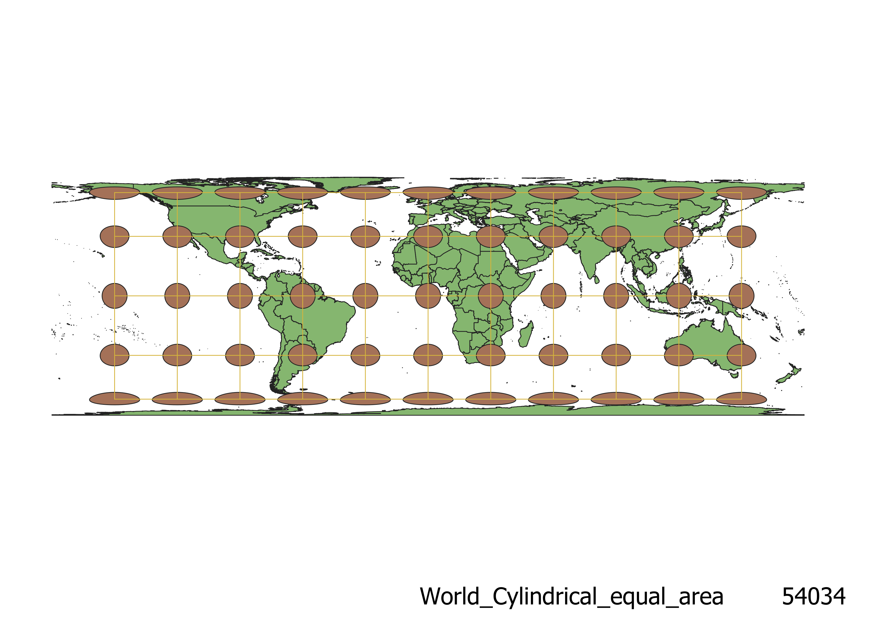

Various Projections and their effects on Map Data - Tayton Alvis
The following projections were displayed using the natural earth vector dataset as a base. After uploading the dataset to QGIS, the projection could be changed in settings, where there were a wide range of projections to choose from. After selecting each projection, I added tissot circles to demonstrate the distortion that occurs across the map. All of the following projections are ways to represent the 3-dimensional surface of the earth in a 2D manner, each in a different interpretation.There is no "silver bullet" when it comes to choosing a projection, but some projections are undoubtedly better than others in certain situations.
WGS84 Projection
This model is fairly effective at displaying earth near the equator, but has a bit of distortion at the poles. It would be well suited to mapping near the equator.

Pseudo-Mercator Projection
This projection does a good job of preserving shape, but is limited in its portrayal of size. Issues are most prominent when observing the poles, with Greenland looking to be nearly the size of Africa. Where this projection shines is its preservation of direction, and it was often used as an effective navigational tool.
North Pole Azimuthial Equidistant Projection
This projection is effective at displaying the shape of countries near the North Pole, but there is a large degree of size and shape distortion as you travel out from the north pole. It is especially confusing when observing Antartica. This projection would be well suited to mapping the Arctic.
Eckert Projection
This projection is a good compromise between preservation of size and shape. There is a degree of shape distortion as you travel east and west of the equator, mostly concrentrated along the equator due to the projection's rigid geometry. Overall, this projection is fairly effective at preserving size and shape of all countries.
World Winkle Projection
Similarly to the Eckert projection, this projection compromises between slight shape and size distortion in order to preserve relative size and shape of all countries. Distortion is a bit smoother due to the more rounded curvature of the projection, making it a suitable projection for many world maps.
World Bonne Projection
This projection is effective at representing the curvature of the earth, does so at the expense of shape and size particularly evident near projection margins. This map would likely be best suited to aesthetic maps focused on showing earth's curvature.
Conic Equidistant Projection
This projection is effective at portraying size and distance near the north pole, but suffers large degree of distortion as you move south. Cardinal directions are also not preserved in this projection due to its conic nature.
Cylindrical equal area projection
This projection correctly displays direction at the expense of size and shape, particularly at the poles. This projection should not be used when preservation of shape is necessary.

Aitoff Projection
This projection presents shape, direction and size fairly accurately while representing the curvature of the earth. Some size, shape, and directional warp occur due to the emphasis on curvature, but the distortion is fairly minimal. The most misleading part of this projection is probably the poles, which are squeezed and make the land masses present there look very close together.
Data used for this project
Download Natrual Earth 1:10m Cultural Vector